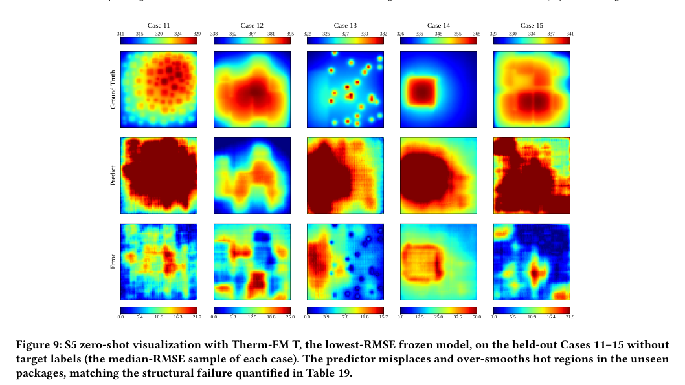
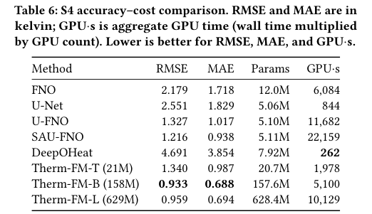

本报告由大模型自动生成，可能存在理解、归纳或数据转述错误；请以原论文为准。 IC-ThermBench: An Open, Progressive Benchmark for Generalizable 2.5D/3D-IC Thermal LearningDavid Huang, Wenkai Yang, Kuiye Ding, Haiyang Xin, Jacky Wei · arXiv (Cornell University) · 2026 · 原文 · PDF 报告模型：gemini-3.1-pro-preview / high 这是一篇针对 arXiv 预印本论文《IC-ThermBench: An Open, Progressive Benchmark for Generalizable 2.5D/3D-IC Thermal Learning》的详细解读。本文旨在解决基于机器学习的芯片热预测领域缺乏统一评估标准的问题，提出了一套渐进式的基准测试框架。 在深入论文具体章节之前，我们首先建立理解本文所需的最小背景知识。 背景补充与基础概念定义：
1. Introduction (引言)问题背景： 在 2.5D/3D-IC 设计中，芯粒的摆放位置、功率密度、材料属性以及散热条件共同决定了芯片的温度分布和热点（Hotspots）。由于在芯片设计空间的探索过程中需要进行海量的热模拟，传统高保真物理仿真成本过于高昂，这促使了基于深度学习的快速热预测模型的发展。 现有研究的痛点： 尽管近年来涌现了许多高精度的热预测模型，但由于缺乏像计算机视觉领域 ImageNet 那样的标准化基准测试，这些模型之间的直接对比是不公平甚至不可能的。作者指出，现有的研究使用了完全不同的数据集、物理模拟器、数据划分方法、数据预处理流程以及评估指标，且大部分代码和数据并未开源。这就导致，某篇论文宣称的“误差更低”，很可能是因为它的测试集更简单，而不是模型本身架构更优。 本文核心大意与贡献： 为了填补这一空白，作者提出了 IC-ThermBench，这是一个开源的、渐进式的 2.5D/3D-IC 热学习基准测试平台。它不仅仅是一个数据集，而是一套完整的评估协议。它整合了既有的 3D-IC 稳态、瞬态任务，并利用 HotSpot 模拟器新生成了包含 50,000 个样本的 2.5D 芯粒数据集。作者精心设计了 5 个逐步变难的“泛化范围（Generalization Scopes, S1-S5）”，并在此统一标准下公平评估了 8 种经典的或最先进的热预测模型，同时提供了一套端到端的代码工具包。 2. Related Work (相关工作)本节梳理了机器学习及 EDA 领域的基准测试发展史。作者指出，标准的基准测试（如自然语言处理的 GLUE 或科学计算的 PDEBench）不仅提供数据，更重要的是提供了共享的任务定义和评估协议。而在热预测领域，虽然已经有诸如卷积神经网络（CNN）、神经算子（Neural Operators）以及预训练的偏微分方程基础模型（PDE Foundation Models）被提出，但由于缺乏统一框架，评估设置高度碎片化。例如，有的研究只改变芯片功耗，有的改变了芯粒几何尺寸，还有的改变了材料，但这些泛化能力的测试结果散落在各篇论文中，无法互相印证。 3. Problem Formulation (问题表述)在讲解基准测试设计前，作者首先通过严谨的物理公式定义了本文要让机器学习模型解决的“热传导问题”。 原理解释与符号定义： 对于一个封装好的芯粒系统，其温度场是由系统结构配置（记为 ，包括封装外形、层叠结构、芯粒排布）和物理操作条件（记为 ，如功耗、散热条件）共同决定的。底层的热传导过程遵循经典的热传导偏微分方程（Heat Equation）：
在机器学习的视角下，这个求解偏微分方程的过程被抽象为一个“热解算子（Thermal Solution Operator）” ： 即模型的目标是学习一个映射，输入结构 和条件 （在代码中表示为输入张量 ），直接输出参考温度场 （在代码中表示为标签张量 ）。对于稳态分析（Steady-state，即温度达到平衡不再随时间变化），上述方程中的时间项 被抹去。本文新生成的 S2-S5 任务全部为稳态任务。 4. Benchmark Design and Protocol (基准测试设计与协议)这是本文最核心的设计部分。作者没有简单地把所有数据混在一起测试，而是精心设计了 5 个不同层级的泛化范围（Generalization Scopes），用于诊断模型到底在什么情况下会失效。 渐进式的 5 个泛化范围 (S1-S5)：
数据生成与输入表示机制： 作者说明了特征和标签是如何在系统中流动的。所有的 2.5D 芯片布局都被光栅化（Rasterized，即映射为像素网格）到一个 的二维网格上。每一层的输入张量（Tensor）随着任务难度（S2到S5）逐渐叠加通道（Channels）：
评估协议与多维度指标： 为了全面衡量模型能力，作者设计了针对两种不同工程需求的指标（公式详见原附录，此处作自然语义解释）：
对于 S5，作者设计了两种测试模式：一种是零样本 (Zero-shot)，即直接把 S4 训练好的模型冻结参数，拿去预测 S5 的新结构；另一种是目标域自适应 (Target-Domain Adaptation，即少样本 Few-shot)，允许模型在极少量的 S5 标签（例如每个系统提供 10 个样本）上微调几步，测试模型恢复精度的能力。 5. Experimental Evaluation (实验评估)本节展示了 8 个主流模型在上述框架下的对决。为了帮助读者理解，必须简要介绍这 8 个被选为基线的模型：
实验结果与推理逻辑： 1. S1 到 S4 的族内泛化（平缓退化）： 实验结果表明，从固定的 S1 任务过渡到引入布局（S2）、材料（S3）和边界条件（S4）的过程中，所有模型的预测误差都在逐渐上升，但并没有崩溃。例如，表现最好的模型在 S4 上的全局 RMSE 仅为 0.933 K，最高温度误差控制在 0.5 K 以内。这说明目前的模型容量足以吸收连续的物理参数变化。在这个阶段，预训练的 Therm-FM 以及改进的算子网络（如 SAU-FNO）表现最佳。 2. S5 跨封装分布外测试（灾难性崩溃）： 当把在 S4 上表现优异（误差不到 1 K）的模型，在“零样本”条件下直接用于结构完全不同的 S5 封装时，所有模型的性能都发生了断崖式的急剧下降。最好的 RMSE 飙升到了 15.51 K（增加了约 16.6 倍），最差像素点的误差（MaxAE）动辄高达三四十度（见附录可视化图 9，模型把几十个分散的小芯粒预测成了连成一片的巨大红区）。 为什么会这样？ 这揭示了一个硬件预测领域的残酷事实：模型在 S2-S4 中只是在拟合特定芯片长宽和网格特征内的数值映射，它们并没有真正理解“芯粒边缘应该发生怎样的热扩散”。一旦芯片结构的拓扑发生剧变（如 S5），模型底层的映射逻辑就失效了。  3. S5 目标域自适应（快速恢复）： 考虑到零样本直接预测不可行，作者测试了“微调”的潜力。结果非常积极：仅仅需要每个新封装系统提供 10 个带有真实标签的样本（），模型的全局 MAE 就能下降 67%~90%，恢复到 2.25 K 的水平。这说明虽然模型不能直接泛化，但它们学到的物理特征作为优秀的“初始化权重”，极大地提高了新环境下的数据样本效率（Sample Efficiency）。 4. 精度与算力的权衡 (Trade-offs)： 作者将模型的参数量、训练时间（GPU·s）与精度放在一起对比（Table 6）。这是一个关键的系统设计权衡：Therm-FM 精度最高，但拥有 1.58亿参数，训练耗时最长；而 SAU-FNO 只有 500万参数，训练快，且精度只比最好的模型差约 30%。这说明在实际 EDA 软件落地时，工程师需要根据对精度和延迟的容忍度来选择模型，而不是盲目追求榜单第一。  6. Key Findings and Implications (核心发现与启示)作者将上述实验现象总结为四条结论：
7. Discussion and Limitations (讨论与局限性)本节明确了该研究不可过度推广的边界。 首先，S2-S5 仅涵盖了 HotSpot 模拟器生成的 2.5D 稳态任务。它没有包含带 TSV（硅通孔）的真正 3D 垂直堆叠结构，也没有包含瞬态热传导（温度随时间动态变化）的大规模生成任务。 其次，文中的所谓“真实标签”全部来自于物理模拟器（Simulator-domain validity），而不是代工厂的硅片实测数据。在实际工业部署前，依然需要利用更高保真度的有限元软件（FEM）或红外热成像实测进行校验。 8. Conclusion (结论)文章最后重申，IC-ThermBench 建立了一个开放的基础设施。通过固定数据集切分、统一指标和开源代码链，它使得未来热学习模型的研发可以真正建立在可复现、可公平比较的基础之上，从而推动该领域向解决实际设计的结构泛化难题迈进。 全文主线总结这篇文章的叙事逻辑极其清晰： 起因：AI 辅助芯片热仿真是个大热门，但大家各用各的数据、各算各的指标，导致领域内“王婆卖瓜”，无法沉淀真正的技术突破。 破局：作者打造了 IC-ThermBench。不仅开源数据，还制定了严密的“考纲”——从固定设计（S1）到改布局（S2）、改材料（S3）、改环境（S4），最后是面对见所未见的全新芯片结构（S5）。 发现与高潮：通过对 8 个主流模型的同台竞技，作者揭示了一个“皇帝的新装”：虽然大家在 S1-S4 的同类芯片上都考了高分，但一进入 S5，所有模型全军覆没（误差暴增 10 几倍）。这无情地指出了当前 AI 物理求解器的最大软肋——它们学到的是特定拓扑下的数值关联，而非普遍的物理定律。 落点：虽然零样本泛化失败了，但作者通过证明“极少样本微调（Few-shot adaptation）即可大幅恢复精度”，为实际工业落地指出了一条实用路径。最终，本文提供的一整套开源框架，将引导后续研究者不再局限于在简单数据集上“刷榜”，而是直面真正的硬件结构泛化难题。 |